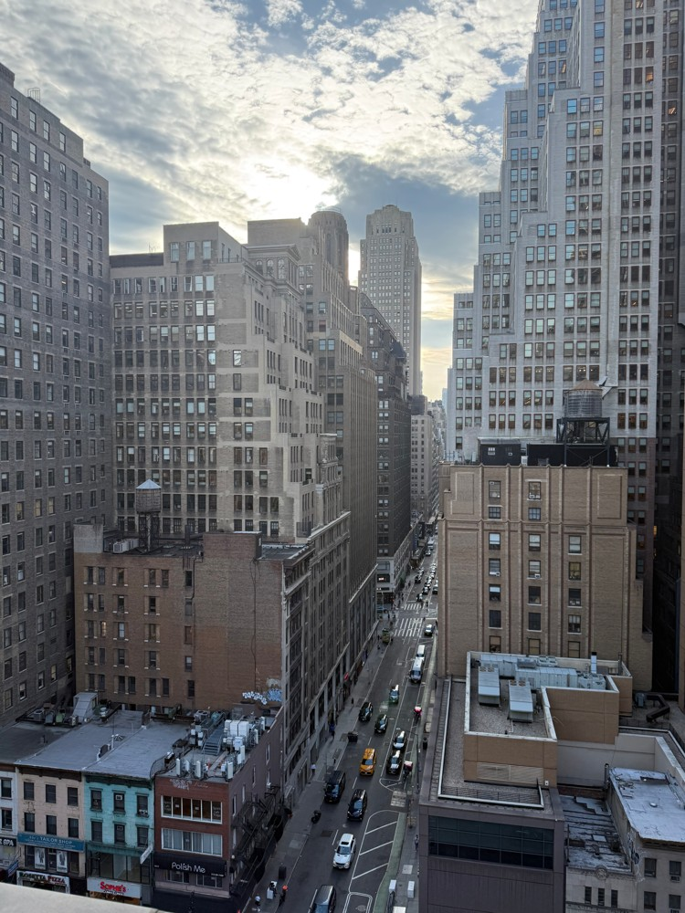
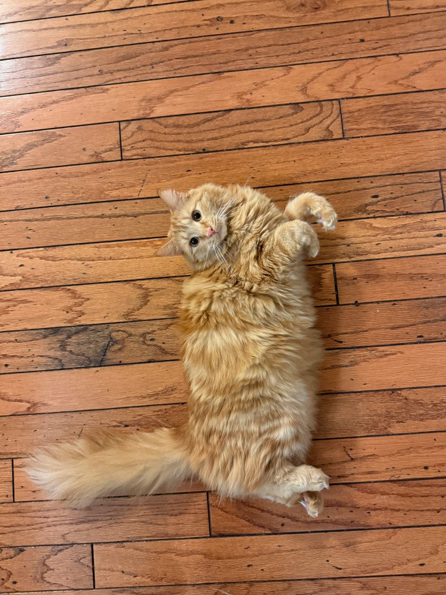
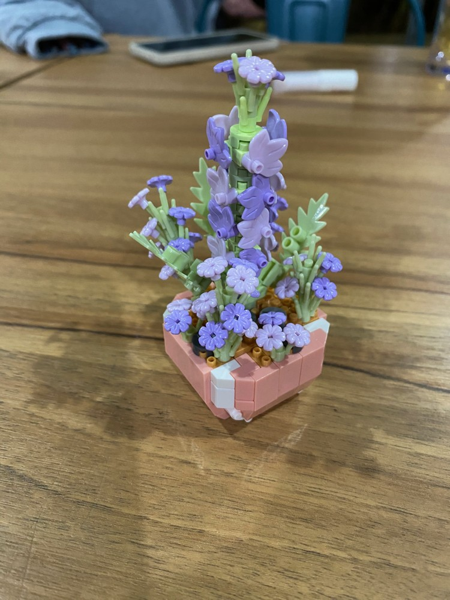
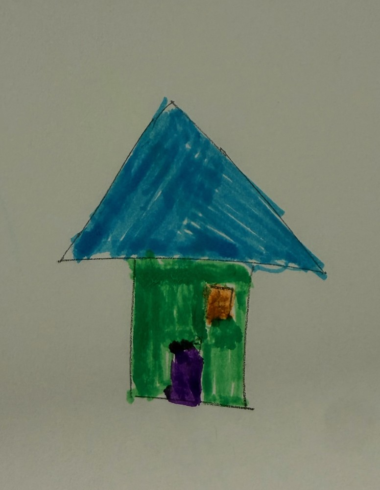
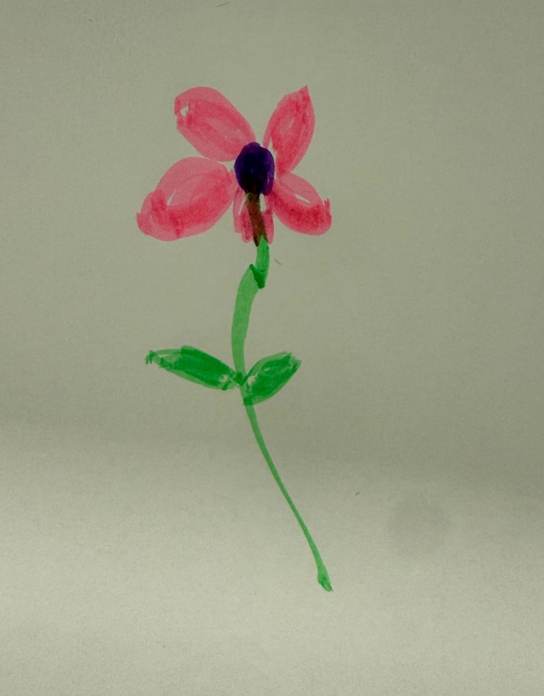
Web artwork: Ponyo Ghibli Pixel Art Pattern , via the Pix Brix Pinterest pin. Original creator attribution has not been independently verified. Other inputs were supplied by Alexander Tsai. House and flower are his own drawings. The course supplies the Campanile reference image.
Part A uses the supplied PixNerd model at 512 × 512 to denoise, generate, and edit images. Part B trains UNets on MNIST, first for one-step denoising and then for flow matching. Flow time runs from noise at 0 to a clean image at 1.
We define x_t = (1 − t) × noise + t × image. We normalise RGB to [−1, 1] because this is the input range expected by the pretrained PixNerd model. We reuse the same noise tensor at each time.
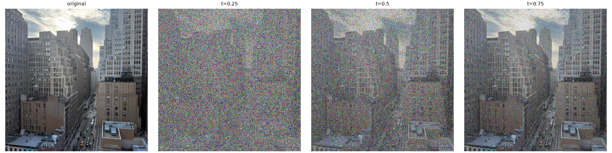
As t increases from 0.25 to 0.75, we can observe the amount of noise gradually decreasing. For the most part, important details such as the outlines of the buildings are visible from t = 0.5. However, finer details such as the glare within each window are still slightly noisy.
The baseline blurs x_t / t. Dividing by t restores the image contribution to its original brightness scale before we blur it. We try sigma values of 1, 2, 4, 8, and 16, then select the lowest MSE against the known original.
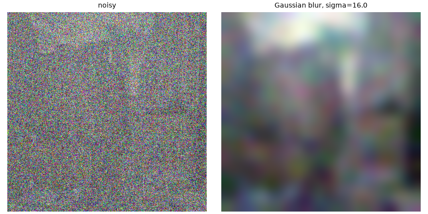
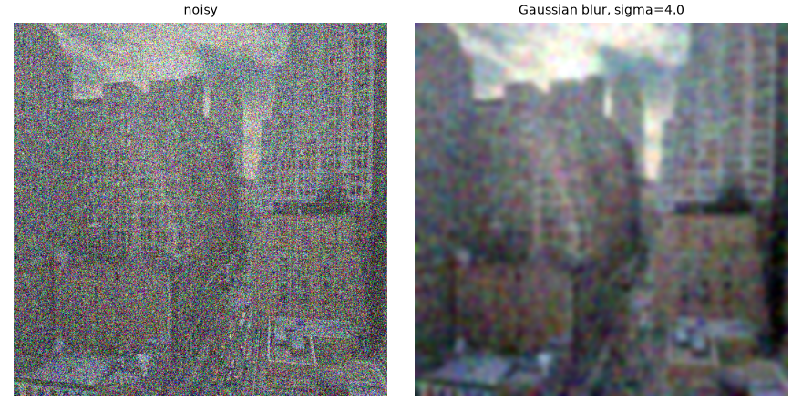
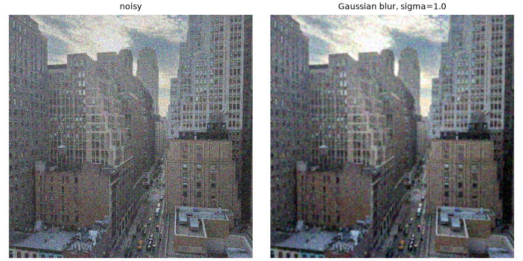
Our objective was to recover a coherent image from the noise via a Gaussian blur. At t = 0.25, 0.50, and 0.75, we select sigma = 16, 4, and 1 respectively. As time increases, we gradually decrease the blur as there is less noise present within the image. You may notice from the pictures above that the tradeoff between noise and blur doesn't exactly lead to great results. It's either too blurry or too noisy.
In this section, we are predicting the velocity at each time t. We use x_t + (1 − t) × predicted velocity, using the simplest prompt ‘a high quality photo’! Each estimate uses one model prediction from its own noisy input.
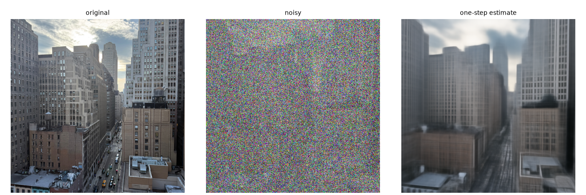
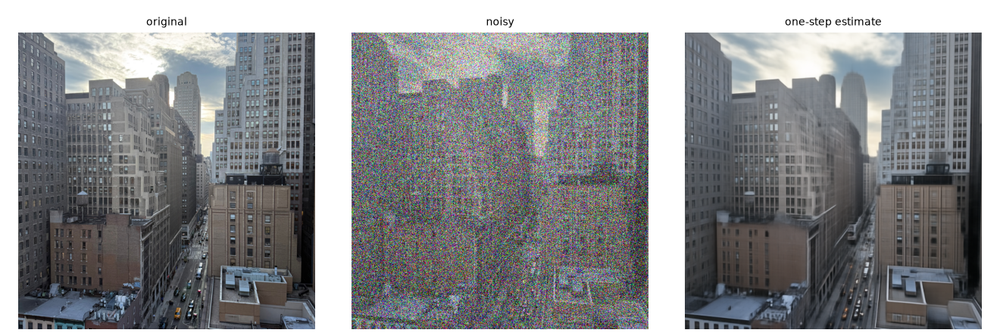
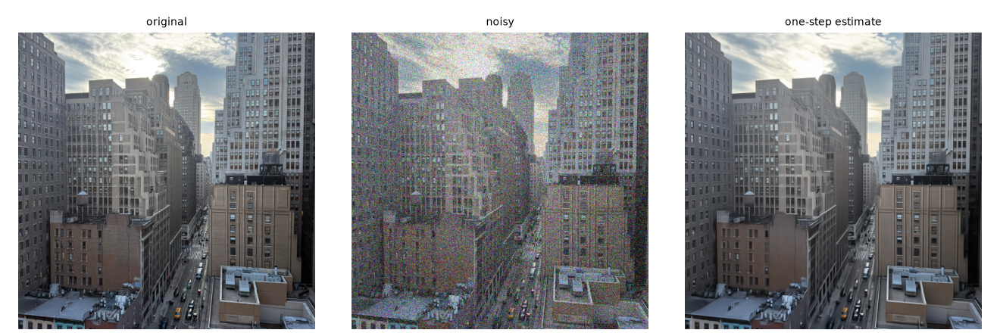
In general, we can see from the results above that the one-step estimate is far superior to our Gaussian baseline, and seems to recover finer details when it starts from a less noisy input. For example, at t = 0.75, the model mostly has everything in place, but is still missing some textures on the brown building on the lower left.
In our code, we set the ground-truth update as clean_image − x_t. We define error at each pixel to be sqrt(mean_RGB((predicted_update − ground_truth_update)**2)). We square each channel's difference first, average across RGB, and then take the square root.
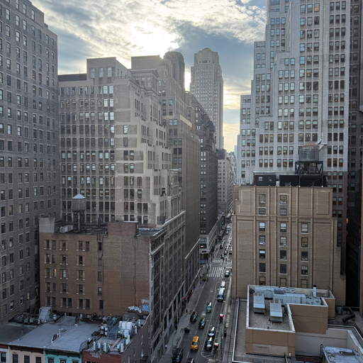
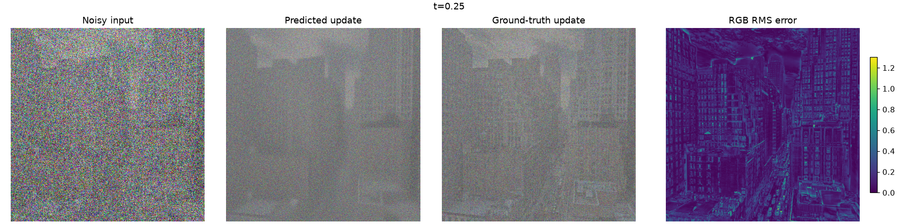
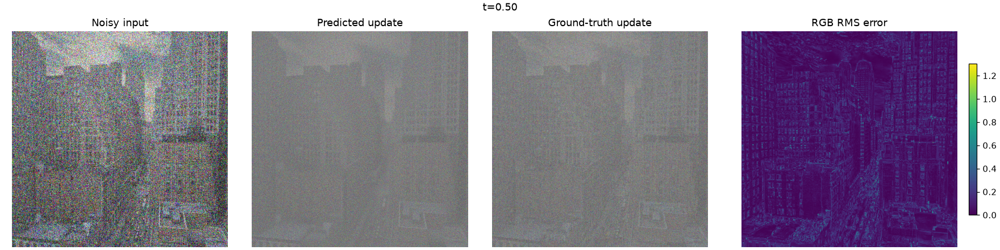
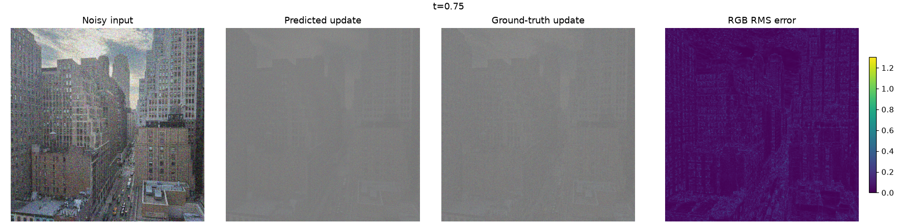
From the diagrams above, it's clear that the update error gets smaller as time increases. This can be seen in the RGB RMS error photos, with the one at t = 0.25 filled with brighter outlines (more error), while the one at t = 0.75 is far darker (less error). The building edges seem to be particularly difficult.
The motivation behind Euler sampling is that the predicted velocity can change as the image changes during generation. By taking many small steps instead of one and recalculating the velocity each time, we can follow this changing direction more accurately. We start at t = 0.50, use h = 0.02, and take 25 updates.
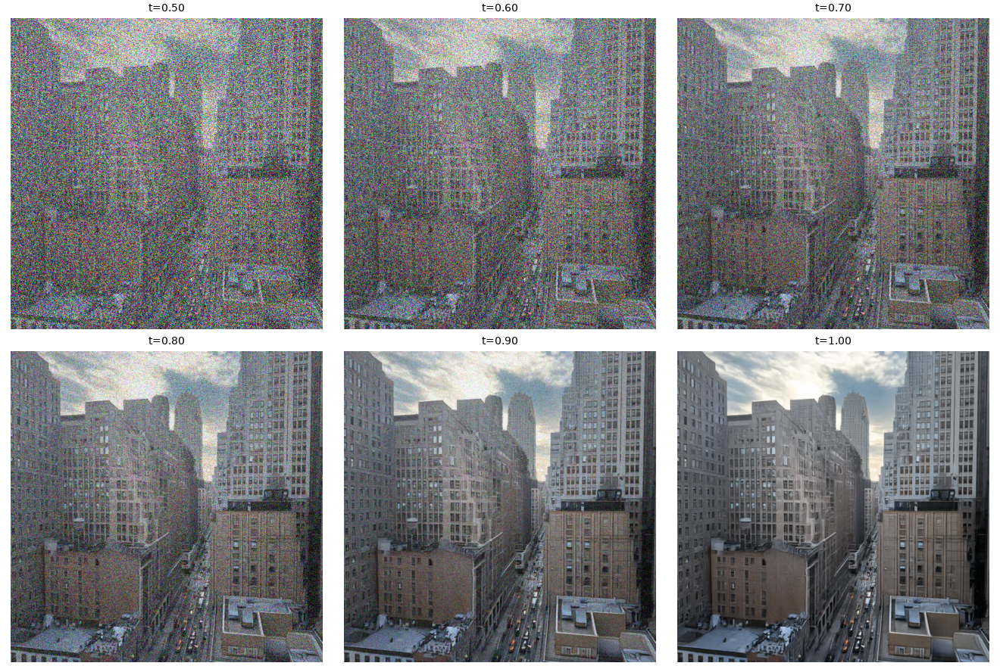
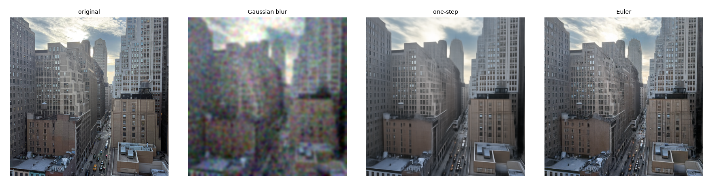
We can see that noise is gradually removed from t = 0.5 to t = 1.
Comparing the Euler sampling method with our one-step method, we can see that Euler tends to produce slightly sharper results. If we look at the building on the left, in the one-step version the edges of that building are still blurred. However, in the Euler version, the edges are much sharper with more accurate detail. The same can be said for the sun above the buildings. The Gaussian result loses much more detail. However, none of them have quite perfectly brought the original back.
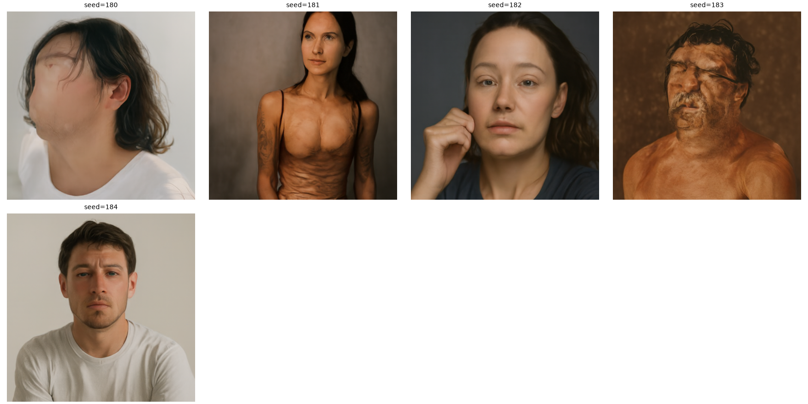
Given some random noise, the model appears to (try to) generate detailed photos of people. These photos are not super diverse in subject matter: all five are portraits. They are also not consistently realistic. Seed = 180 is completely missing its face. This small set shows the model's preference for portraits under this prompt, but it is not enough to establish what its training data contained.
The simple idea behind classifier-free guidance is that you can calculate your velocity as a linear combination of the conditional and unconditional predictions. Here we use v_cfg = v_c + w × (v_c − v_u), with w = 7, an empty unconditional prompt, and Euler h = 0.02. Both predictions use the same image and time. At w = 0, this reduces to the ordinary conditional prediction.
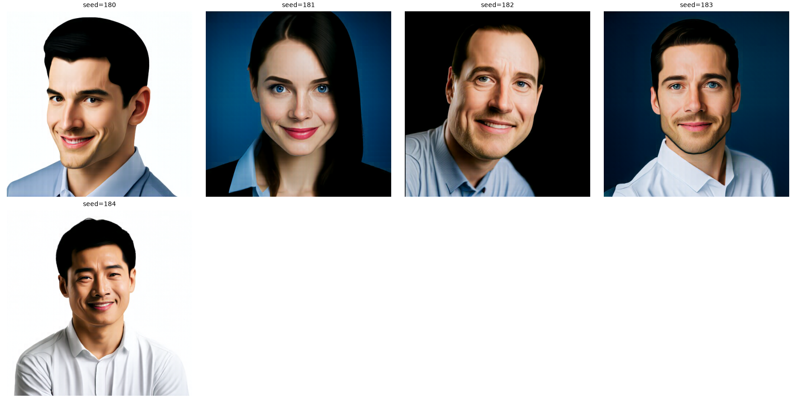
The guided samples come out much better, with the faces having mostly coherent structures. The subjects are still not super diverse: these are mostly head-and-shoulders portraits, with several men in office clothes.
All instances use the given prompt ‘a high quality photo’, CFG w = 7, h = 0.02, and a fixed initial noise.
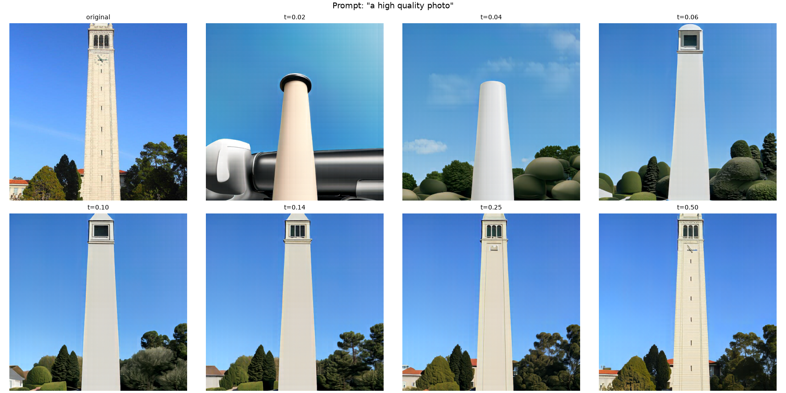
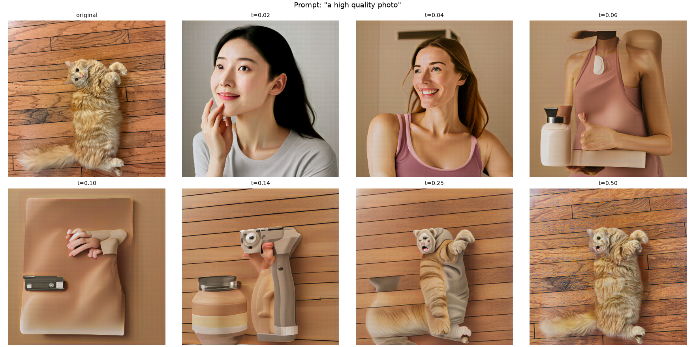
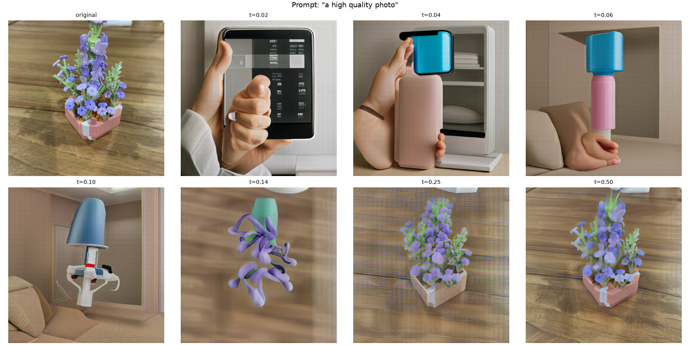
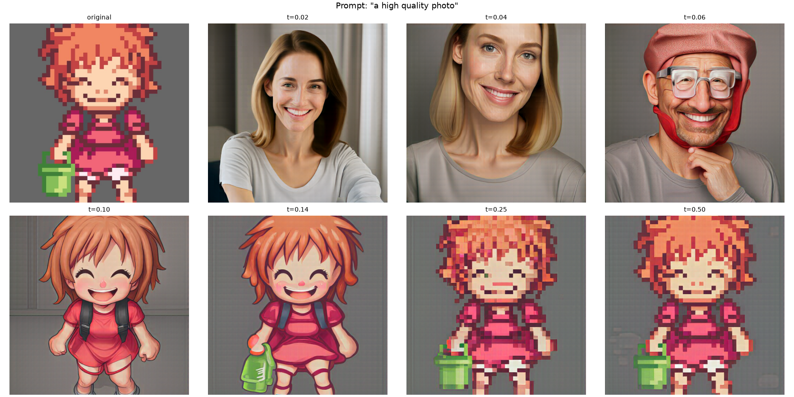
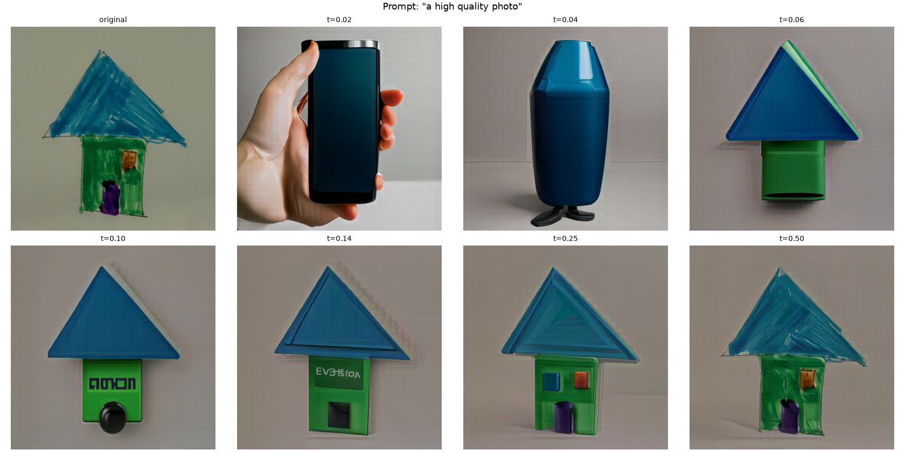
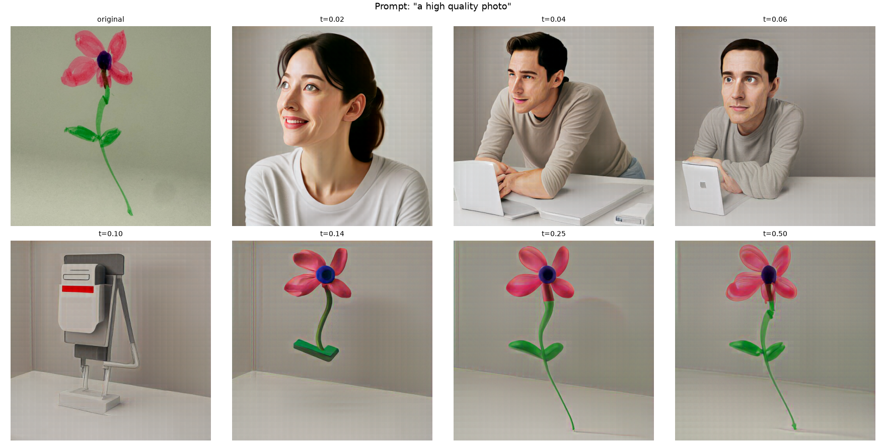
We can see that larger starting times preserve much more of the input than smaller starting times. This makes sense. At smaller starting times, we add more noise and leave the model more sampling steps to alter the photo. At larger starting times, it starts with a cleaner image and has less time left to change it. The sweet spot appears to be around t = 0.1 to 0.25, where photos are still somewhat recognizable and yet have some meaningful transformation.
Comparing across inputs, it would appear that realistic inputs such as my cat and the Campanile don't really transform as “smoothly” as hand-drawn inputs such as the house and the flower. At low starting times, the cat can become an unrelated person, whereas the drawings often keep some simple shapes and colors as they are redrawn.
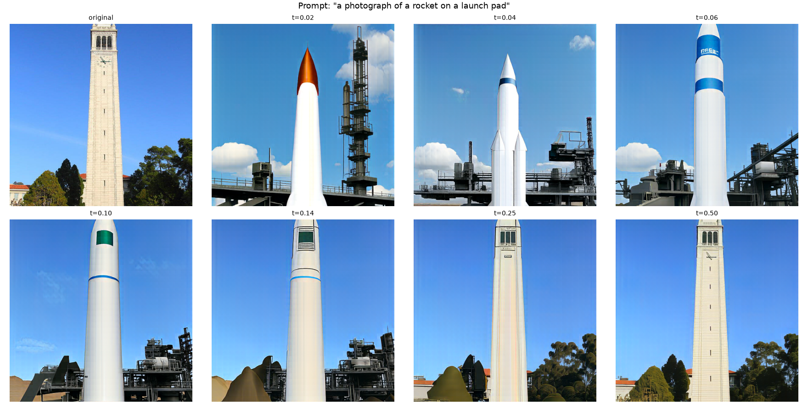
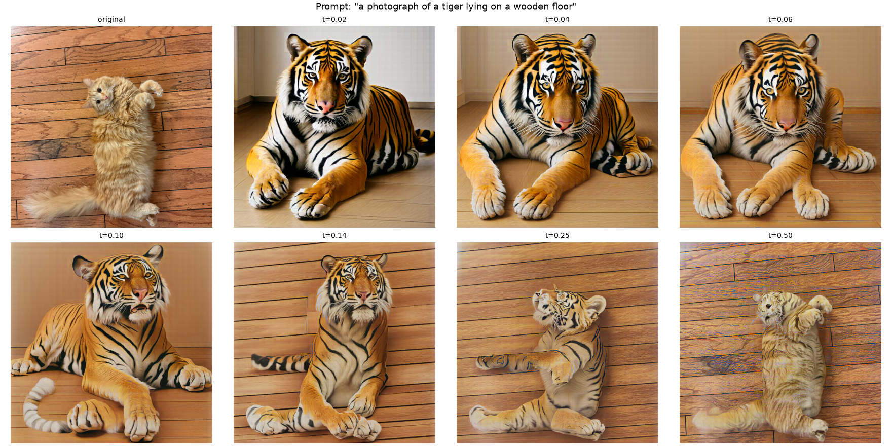
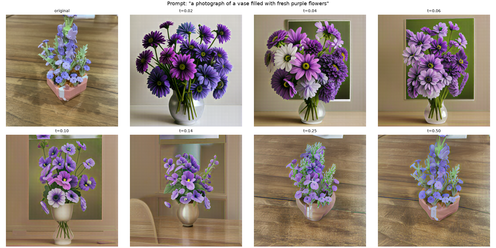
Within text-guided image editing, we can see that for certain inputs, like the Campanile, the general vertical structure is still recognizable even at low t, although the tower itself becomes a rocket. The cat and the flower-object photo can become vastly different. Lower starting times (0.02 to 0.1) give the prompt more influence, while larger starting times keep more of the original.
For the rocket, around t = 0.06 to 0.10 is a useful example where the tower's framing is still visible but the tower has become rocket. The cat-to-tiger and toy-flowers-to-fresh-flowers edits also need lower starting times for a stronger transformation.
We want one image to have two different interpretations. To do this, we average prompt A's guided velocity with the rotated-back guided velocity of the rotated input (lots of rotations, I know...) under prompt B at each Euler step.
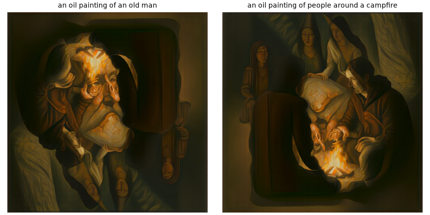
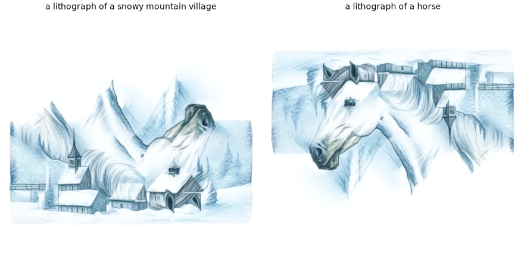
This experiment appears to be incredibly successful. Although there may be some noise in the background, we can still distinguish both interpretations. In the first image, the old man becomes people around a campfire when rotated. In the second, the snowy village becomes a horse. The horse is especially clear after rotating the image.
Similar to what we did in our previous project, we will now produce some hybrids! We combine lowpass(v_a) + v_b − lowpass(v_b). We give the Gaussian a kernel size of 265 and sigma 16 at 512 × 512; full-size and reduced views are shown.
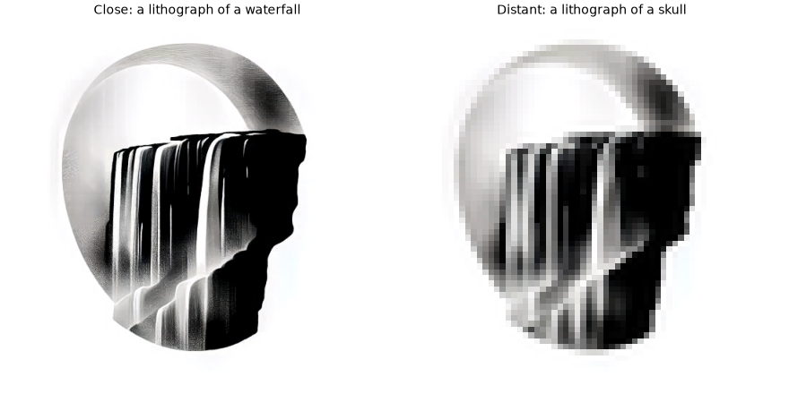
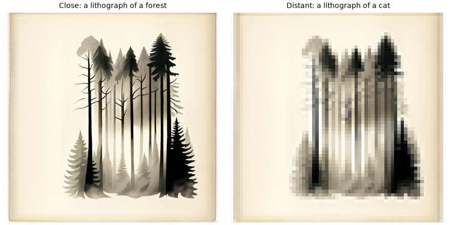
To verify this experiment, I literally stepped further away from my Mac. Here we supply two separate prompts: prompt A provides the low-frequency structure that is more visible from a distance, and prompt B provides the high-frequency details that are more visible nearby. The first hybrid reads as a waterfall nearby and a skull farther away. The second reads as a forest nearby and a cat farther away.
The UNet architecture consists of two downsampling blocks, a 7 × 7 feature map pooled down to a 1 × 1 bottleneck, two upsampling blocks, and skip connections between matching resolutions. MNIST pixels lie in [0, 1].
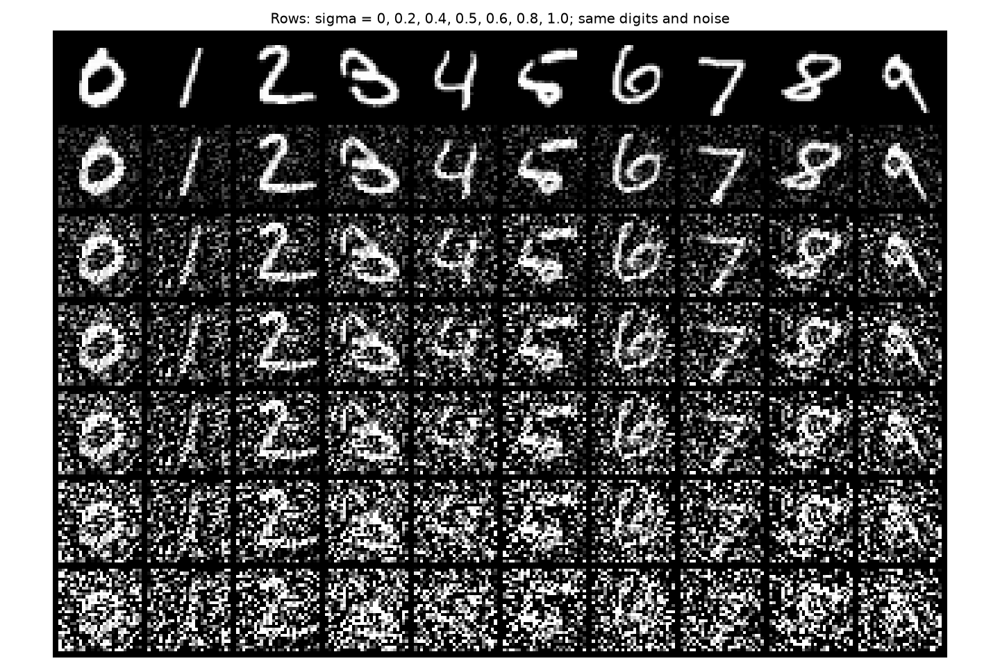
To explain UNet simply, we have three key processes: downsampling, upsampling, and skip connections. Our objective in downsampling is to help capture certain high-level features (akin to the broader context of the image), rather than the more granular ones, while also saving on computation. After analyzing the more high-level features of the image, we then upsample to allow the network to produce an output at our desired resolution. Here, skip connections are useful because information may be lost during the whole downsampling process. They pass earlier features to the decoder by concatenating them with the features at the matching resolution.
We can see from above that as noise increases, the digit inputs gradually become corrupted.
We run training on our MacBook (I prefer local development) using the following configuration: D = 128, batch size 256, Adam LR 0.0001, 5 epochs, and fresh sigma = 0.5 noise per batch. Training uses only MNIST's training split; displayed digits are held out.
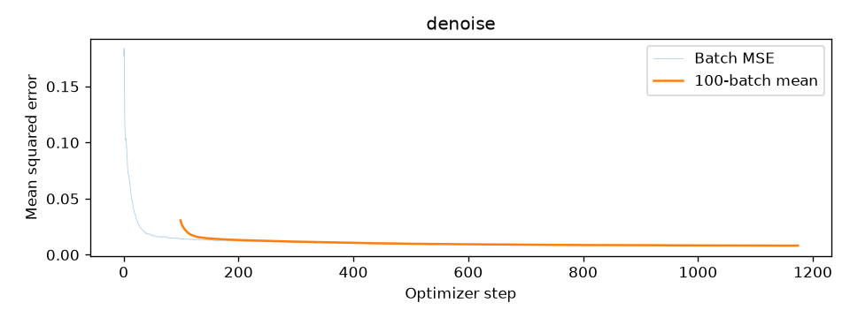
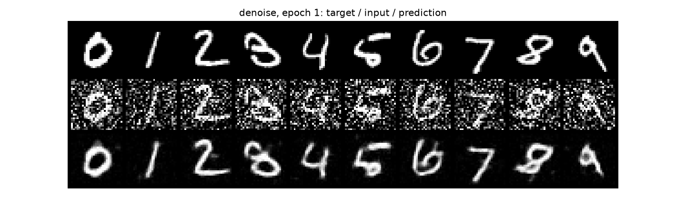
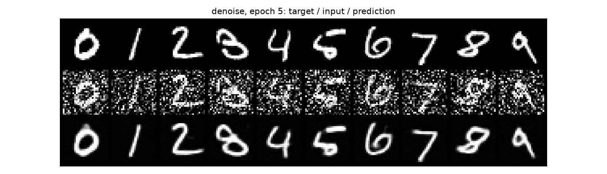
We can observe that the training MSE rapidly drops during the first few optimizer steps and stays relatively flat for the next 1,000. This suggests that the later improvements are way smaller. Comparing our outputs after epoch 1 and after epoch 5, there is very little difference between the two. However, if you look really closely, you may notice on some numbers (pay attention to 1 and 2!) that the amount of noise in the final prediction is slightly lower, i.e. the outline of the number is cleaner.
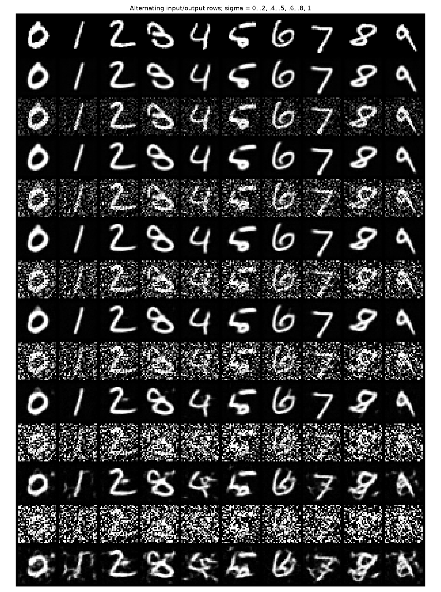
It's pretty clear from our output above that as we increase sigma, our outputs progressively degrade. In particular, at sigma = 0.8, there is a significant degradation in output quality. At lower sigma levels, our output quality seems to be more or less holding up, although the network can still smooth or alter strokes even when the input is already clean.
We train a fresh D = 128 UNet for 5 epochs with independent Gaussian noise as input and a clean digit as target, using the same optimizer and batch size as before.
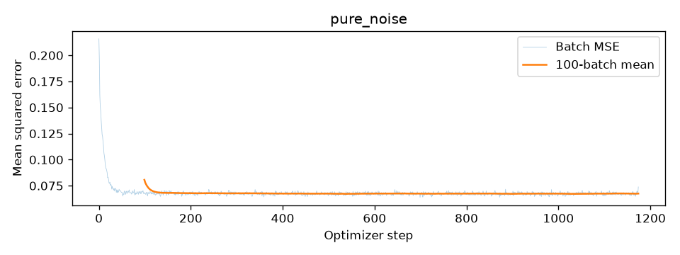
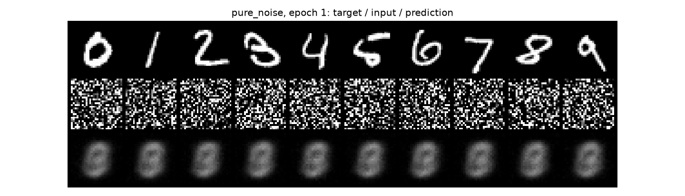
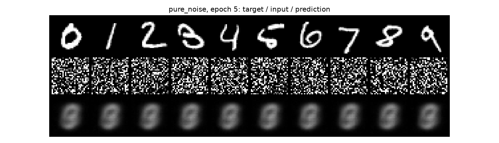
We can see here that the model, regardless of whether it is epoch 1 or epoch 5, predicts a blurry mean of all the digits blended together. If I really scrutinize it, I'd say it kind of looks like the number 8. The issue here is that the input noise is independent of the target digit, so it gives the model no clue which digit to produce. Under MSE, the prediction that minimizes the expected error in this situation is the average training image. That is why it predicts approximately the same blurry digit for every noise input.
Time-conditioned flow matching can be thought of as gradually turning noise into an image. Our hope is that by using multiple steps and recalculating the velocity, the output will improve! We use the following configuration: D = 64, batch size 64, Adam initial lr = 0.01, and 10 epochs. The exponential scheduler multiplies lr by 0.1^(1/10) each epoch. Random continuous times and fresh Gaussian noise construct the velocity target x_1 − x_0. Sampling uses 50 Euler steps.
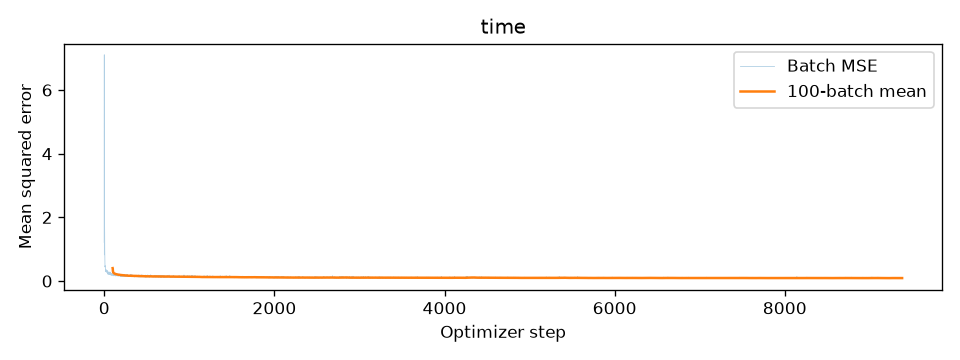
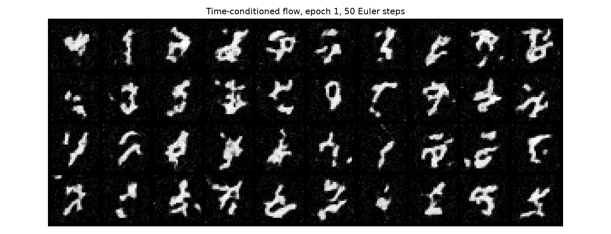
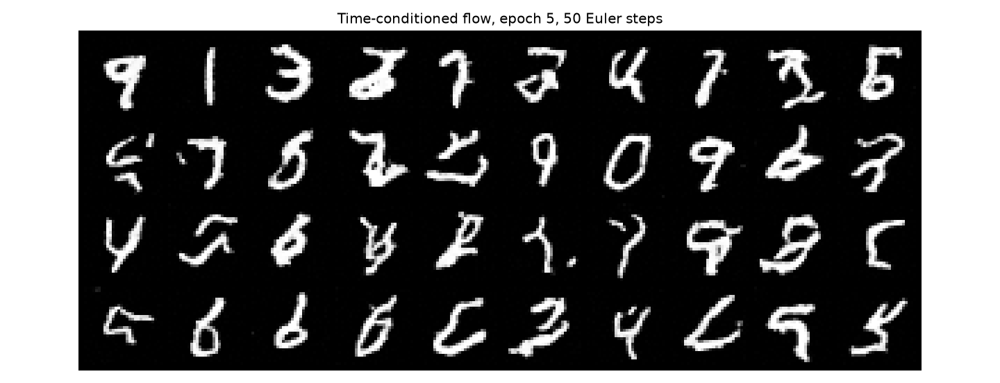
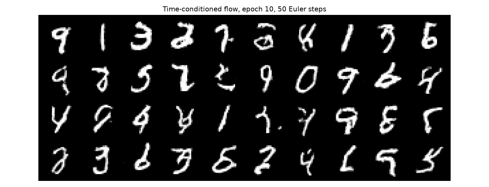
We feed the network the current image x_t and time t to predict the velocity at the stage time=t. During training, the target is clean image minus noise, x_1 − x_0, for the sampled pair. We pass t through two fully connected blocks, reshape their outputs across the spatial dimensions, and multiply them into the decoder features at the 7 × 7 and 14 × 14 resolutions.
We can see from above that output quality improves from 1 to 5 epochs but improves less from epoch 5 to epoch 10. More recognizable digits appear after the first epoch, although some shapes remain ambiguous at the end.
Class conditioning differs from our previous attempts. We explicitly feed the model the digit label we want, represented as a one-hot vector. We pass this through fully connected blocks to scale decoder features. During training, we use D = 64, 10% class dropout, batch size 64, and Adam initial lr = 0.01 with the same scheduler. Class dropout means zeroing the class vector for 10% of the examples, so the same model learns the unconditional prediction needed for guidance. Sampling uses 300 Euler steps and our same equation v_u + 5 × (v_c − v_u).
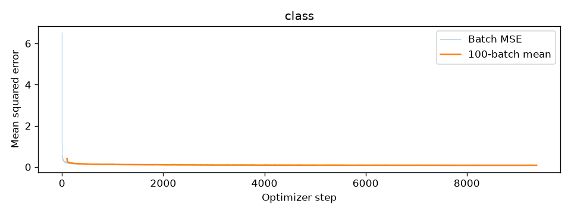
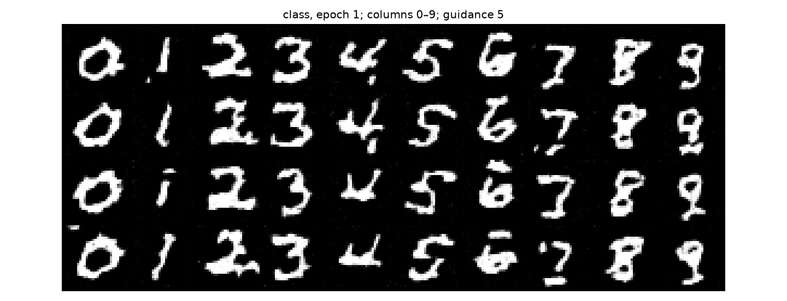
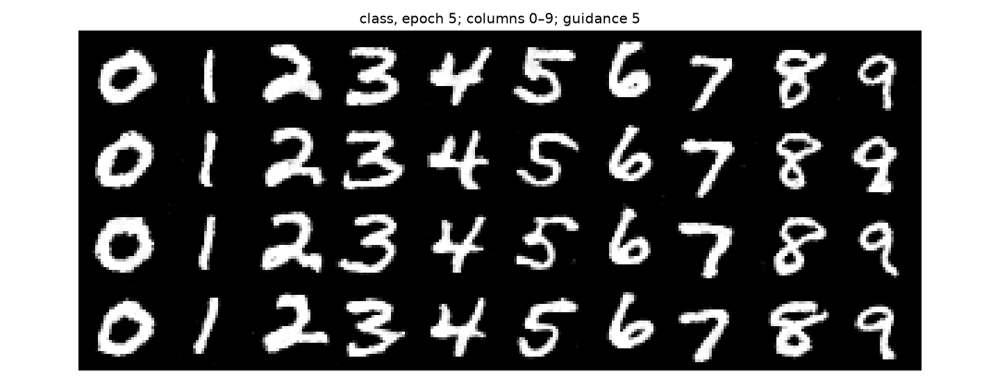
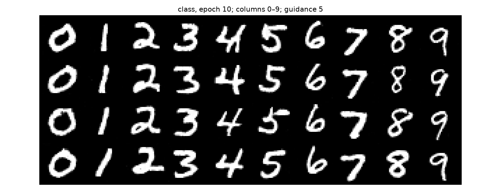
From above, we can observe a notable improvement from epoch 1 to epoch 5. However, once again, there is less improvement from epoch 5 to epoch 10. In general, we can tell that the class-conditioned model outperforms the time-only one in these samples. This shouldn't be surprising. We are providing the model with the requested digit label, and guidance will naturally strengthen its influence.
What happens if we remove the scheduler? This is the piece of machinery that adjusts the learning rate during training. Our original run uses exponential decay, starting at 0.01 and decreasing toward 0.001. The comparison trains a fresh class-conditioned model with the same setup as before, but with a constant learning rate of 0.001.
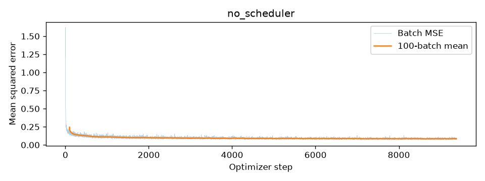
We can see here that the fixed-rate run produces clearer, more coherent digits after epoch 1 than the scheduled run. The reasoning is that the fixed-rate run starts with a learning rate ten times smaller, which gives it smaller weight updates from the beginning, which actually helps it to be more stable in this experiment.
By epoch 10, both runs produce clear digits with the requested labels. We should be cautious though., Removing a scheduler might not always help. A learning rate that is too large can cause us to “hop” over a good solution instead of settling near it.